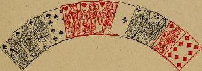
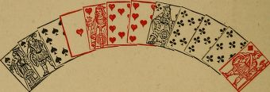
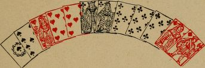
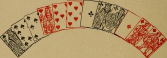
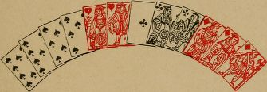
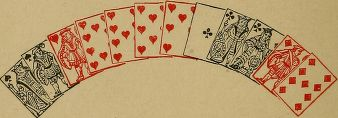
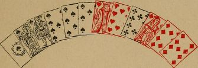

Discarding
Introductory
On account of the variety and complexity of the considerations involved in discarding at Piquet, the few general rules that can be laid down are liable to frequent modification. Subject to this condition, a statement follows of the more important points to be borne in mind when discarding.
This statement is supplemented by the application of the Doctrine of Probabilities to various cases, and by a series of illustrative Examples.
General rules
Before deciding on your discard, you should ascertain whether you hold anything which is good against the cards, or is equal, and what there is against you that may be reckoned as good, or called as equal.
For example: You take up A's hand. There are against you, a six card point, a quint major, and four tens. You have nothing good, and may be repiqued. In addition, there are two five card points against you, a quart minor, a tierce major, three kings and three queens. You should make yourself aware of all this before throwing out a card; and so on for other hands. At first, this will be slow work; but, with practice, you will be able to perform the mental operation of finding what there is against you, with but slight effort.
When discarding, elder hand, your main object, with moderately good cards, should be to plan an attack. You should freely unguard kings and queens, and should throw out whole suits, with a view to making a large score if you take into the suits you keep.
On the contrary, your first care, younger hand, should be to protect your weak places. You should keep guards to kings and queens; and you should seldom denude yourself entirely of a suit of which you hold one or two small cards only, as these may guard high cards taken in. The elder hand will probably lead his best suit; and that is not unlikely to be the one in which you were originally weak. For instance: Suppose you, being younger hand, take up the cards already referred to (A's hand), including nine, eight of diamonds. You should not part with both the diamonds, but should discard two small clubs and one diamond.
Keeping the best suit for point is essential inmost cases, and especially younger hand. The point is of much greater consequence than beginners suppose. Gaining the point makes an average difference of more than ten to the score, and, what is more important, it saves piques and repiques. It is, therefore, seldom the game for either player to discard from the suit which he selects for point.
Next in importance to the point are the cards. You should discard in such a way as to give the best chance of dividing or winning the cards. Winning the cards, instead of losing them, makes a difference of about twenty-three or twenty-four points.
In consequence of the previous consideration, it not unfrequently happens, more especially elder hand, that you should not keep the longest suit for point, when that suit is composed of low cards, and keeping them necessitates the discard of high cards from other suits.
Do not break into several suits in discarding if it can be avoided. For if cards are taken in to a broken suit, it remains ragged. When you have made up your mind to discard from a given suit, it is often right to throw the whole of it. If any card of that suit is kept, it would be (a) because it is a winning card ; or, (b) because it is a guarding card, more especially younger hand ; or, (c) because it makes up a quatorze or trio.
Referring to the hand already given (A's hand), you may discard from three suits, for at least of the above reasons, throwing out two small clubs, two diamonds, and king of spades, in order to keep the three knaves. There are four tens against you; and you have a poor chance of the point or of the cards, even if you keep the king of spades. But suppose you had the nine of hearts instead of the knave. You should then throw the clubs and diamonds, and keep two unbroken suits. Going for two suits is often the resource of a player in difficulties.
It is sometimes advisable to throw a whole suit, younger hand, either because it consists of three useless cards, or because keeping it may injure your hand in other respects. In the second case,the rejected suit should be one in which you are not likely to be attacked. Thus : If the suit discarded consists of king, knave, and a small one, the elder hand will probably avoid leading that suit should he happen to hold ace, queen of it. King, queen, and a small card is a suit which may be discarded without much probability of being attacked in it.
It is a common error with beginners at Piquet not to take all their cards, especially if taking the full number involves parting with high cards. The hands where all the cards should not be taken are few. There is not so great an objection, however, to the younger hand's leaving a card as to the elder hand's doing so; for, in the latter case, the card left may be taken by the adversary, but, in the former case, it is merely excluded from the player's hand. The principal situation for leaving a card, elder hand, is where there is a chance of a great score, and no repique against you.
Cards in sequence, or that may form a sequence with those taken in, should be kept in preference to others of equal value. Thus: If you are obliged to discard an ace or a king from an ace, king suit, discard the ace, as you may take in so as to hold a sequence to a king; if you discard the king you cannot hold a major sequence in that suit. But other considerations may cause you to select the king.Looking again at A's hand, p. 103, it will be seen that A throws the king in preference to the ace. His reason is that he has two aces and only one king; he may take in aces to form a trio or quatorze.
Again: Queen, knave, ten is a better suit to keep than king, knave, ten, unless it is deemed advisable to hold a king rather than a queen. It is generally right to retain a virgin tierce to a queen, especially younger hand, unless you see a chance of a great score in other suits.
Trios should be kept if they can be retained without injuring the hand in other respects. Thus: If about to discard a king or a queen of a suit, and you have two other kings, discard the queen; but if you have two other queens,discard the king.
It is seldom advisable to put out a high card for the sake of keeping a low trio, especially when there is a higher one or a quatorze against you. Many a hand is ruined by going for quatorzes of knaves or tens.
The discard is further affected by the state of the score, especially in the last two hands of the partie. If you are a good way ahead, and particularly in the last hand but one, if you have a chance of winning a rubicon, you should make a safe discard, with the view of dividing or winning the cards, in order to keep your adversary back.On the other hand, if the score is much against you, and you are under a rubicon, you are justified in making a bold discard. In the last hand, the discard must frequently be regulated by the state of the score.
Calculations
The Piquet student should be acquainted with the following odds.
The odds that the elder hand (if he takes all his cards) will take in :
| One named card are | 3 to 1 | against him |
| Two named cards are | 18 to 1 | " |
| Three named cards are | 113 to 1 | " |
| Four named cards are | 968 to 1 | " |
| Five named cards are | 15503 to 1 | " |
| One card (at least) of two named cards are | 5 to 4 | " |
| One card (at least) of three named cards are | 3 to 2 | on him |
| Two cards (at least) of three named cards are | 6 to 1 | against him |
| One cards (at least) of four named cards are | 5 to 2 | on him |
| Two cards (at least) of four named cards are | 3 to 1 | against him |
| Three cards (at least) of four named cards are | 32 to 1 | " |
The odds that the younger hand (if he takes all his cards) will take in :
| One named card are | 17 to 3 | against him |
| Two named cards are | 62 to 1 | " |
| Three named cards are | 1139 to 1 | " |
| One card (at least) of two named cards are | 5 to 2 | " |
| One card (at least) of three named cards are | 3 to 2 | " |
| Two cards (at least) of three named cards are | 21 to 1 | " |
| One cards (at least) of four named cards are | 29 to 28 | on him |
These calculations properly applied will direct the player in discarding.
Thus: It is 3 to 1 that the elder hand does not take in a named card. It is, therefore, more advantageous to carry the best suit for point, and high cards for the chance of the cards, than to throw out any of these in hopes of taking in a card to complete a quatorze of queens, knaves, or tens (see Examples III., IV., and V)
The odds against taking in two or more named cards, or two of three named cards, elder hand, are so considerable, that, except in desperate cases, good cards should not be discarded on such a speculation. But the odds are very slight against taking one at least of two named cards, or two at least of four named cards ; and they are in favour of taking one at least of three or four named cards.
To apply these : If the elder hand has a quart major and two other aces dealt him, the odds that he will take in either the ten to his quart, or the other ace, are only 5 to 4 against him.
Again: If the elder hand carries three aces and three kings, the odds against his taking either the other ace or the other king are only 5 to 4 against him.
If the elder hand has a quatorze dealt him, and there is only one superior quatorze against him, he should, as a rule, keep the quatorze, as the odds that he will take in one card at least of four named cards are 5 to 2 in his favour. But this rule may require reconsideration, with a low quatorze, if, to keep it, cards must be put out that in other ways spoil the hand, as by compelling the player to discard from point or sequence, or to put out high cards that risk the loss of the cards, or of a capot.
With a quart to a king and two other kings, it is 3 to 2 in favour of the elder hand taking in the ace or nine to the quart, or the fourth king, and,therefore, it is very advantageous to keep the quart and the three kings.
If the elder hand has a quart to a king, and a quart major dealt him, and he is considerably behind in the score, and he must discard from one of the quarts, he should keep the quart to the king; for it is 3 to 1 against his taking in the ten to the quart major, but only 5 to 4 against his taking in either the ace or nine to the quart to the king. (For a further illustration of this calculation,see Example XXV.)
The chance of taking a certain number of cards included in a larger number of named cards, must not be confused with the chance of taking a certain number of named cards. For instance, if the elder hand has two kings and two queens dealt him, the odds are 3 to 1 against his taking in two of the other kings and queens. But the odds against his taking two kings or two queens under these circumstances (i.e., two named cards) are 17 to 2 against him.
The odds against the younger hand's taking in even one named card are so considerable (17 to 3 against him) that he ought not to discard on such a chance except in desperate cases (see Example XXX.), especially if by so doing he risks the winning or saving of the cards (see Example XIII.). The same rule applies a fortiori to more than one card.
It is only 5 to 2 against the younger hand's taking in one, at least, of two named cards. Hence, in some cases, he would discard on this chance (see Example XVIII. and Example XXXII.).
Again : It is only 3 to 2 against the younger hand's taking in one, at least, of three named cards. Therefore, if he must take in one of three cards to save a pique or a repique, it would be right for him to discard for this chance, even if, in order to do so, he must put out a valuable card,as a king, or one of his point. (For a further illustration of this calculation, see Example XXXI.)
It is 29 to 28 in favor of the younger hand's taking in one of four named cards. So, having no ace dealt him, he may calculate on taking in at least one; or, with two quarts (except major or minor quarts), he may expect to take a card to make a quint; or, with a quart major against him,he may calculate on drawing, at least, one of the quart major.
If the elder hand has two quatorzes against him(say of aces and kings), it is only 33 to 31 against his drawing both an ace and a king (i.e. Of drawing at least one of four aces, and at least one of four kings). Younger hand, it is 4 to i against taking in one of each quatorze.
The younger hand has two trios, say three knaves and three tens. Either of these, if improved into a quatorze, will save the rubicon.
To keep both the trios, in good play, he must leave a card. Ought he to keep the two trios, and leave a card, or to take three cards and discard from one of the trios?
If he takes all three cards, the probability that he draws the one card to complete the quatorze is 3/20 = 57/380
If he only takes two cards, the probability that he draws one at least of the two cards to complete a quatorze is 74/380
The odds are therefore 74 to 57, or about 4 to 3, in favour of leaving a card.
Examples
Owing to the impossibility of calculating all the chances in many cases that present themselves in actual play, differences of opinion often arise as to the proper discard. Such differences of opinion may be expressed in respect of some of the following hands. The Author will be content if he has succeeded in avoiding glaring errors, and in exhibiting a series of Examples that serve to guide those who desire to learn the game of Piquet.
The score is assumed to be love all, unless otherwise stated.
Example I.
Unguarding a kmg, elder hand, to keep the point. Guarding kings, and protecting a weak suit, younger hand.

With these cards the elder hand should throwout knave, eight, seven of spades, seven of hearts,and eight of diamonds, keeping the clubs for point,and the three kings. In order to keep the point he must unguard a king; and this, being elder hand, he does not hesitate to do.
The younger hand with these cards should throw eight, seven of spades, and eight of diamonds. He should keep both his kings guarded, and should on no account part with the seven of hearts, which would be of great service should he take in king of hearts, or queen and another.
Example II
Keeping the point. Unguarding suits elder hand, and keeping guards younger hand.

The elder hand having these cards dealt him,should keep the quart to a king for point, and the four kings, discarding queen, knave of hearts, ace,knave of clubs, and ten of diamonds.
The younger hand should also keep the point and the four kings. In addition to this he should keep all his suits guarded, and should discard knave of hearts, and ace, knave of clubs. He should not part with the ten of diamonds.
Example III.
Discarding from low trios., to keep the point.
Trios of queens, knaves, or tens, may be freely discarded from, if, in order to keep them, a card of the point has to be put out.

With these cards the elder hand should not keep his three queens, but should throw the clubs and the diamond, and retain the other two suits unbroken.
Example IV.
Discarding from a trio, in preference to throwing from the point, or to leaving a card.

If the elder hand keeps his knaves he must either throw a card from his point or leave a card. Neither course is advisable. The general rule isn't to break into the point; and it would be dangerous for the elder hand to leave a card with two seven-card points, a quint, three aces, three kings, and three queens against him. He must sacrifice the knaves to keep his point, by which means he will, at all events, divide the cards. His proper discard is the heart and the four diamonds.
Example V.
Discarding from a trio in order to keep the point. Going for two suits, with a better chance of the cards.

The elder hand has three queens, and there is no great score against him. Notwithstanding this,he should not part with the eight of his point(diamonds) to keep the queens, but should discard the spades and hearts. By sacrificing the queens he gives up a chance of fourteen; but by keeping the eight of diamonds he increases his chance of scoring the point, and he improves his chance of winning tricks in play.
It may be stated generally, that with ace, king, queen, and a small card of a suit, and three queens, or three knaves, or three tens not good against the cards, and such other cards that the player must either discard one of these or the small card of the point, the game is to keep the point.
Example VI.
Discarding from a point which remains good against the cards.
It is hardly necessary to state that the objection to throwing a card from the point does not apply if, after the discard, the point still remains good against the cards.

The discard, elder hand, is seven of spades, the two hearts, the club, and the diamond, for the reasons already given.
If the club or the diamond were the seven, the discard is less easy; most players would leave a card instead of throwing one of the point.
Example VII.
Discarding from low trios, to divide or win the cards. Giving up the point, younger hand, in order to keep suits guarded.
It is seldom right to throw out an ace, or a king, in order to carry three queens, knaves, or tens, if by so doing the loss of the cards is risked.
The principal exception is when one named card taken in gives a good chance of a pique or a repique, the cards ought then generally to be risked, subject however to the state of the score, a safe discard being preferable as a rule when ahead.

The elder hand should discard the clubs and diamonds for the reasons already given.
The younger hand's discard is doubtful: on the whole, it seems safest for him to give up the point,and to discard three spades, keeping all his suits guarded, and going for the chance of queens and of dividing the cards.
In the above hand, substitute the ten of spades for the seven. The elder hand should then keep the spades and the queens. The younger hand should throw out the three clubs, unless very backward in the score.
Example VIII.
Discarding from low quatorzes, to divide or win the cards.
If the loss of the cards is risked by keeping quatorzes of knaves or tens, it is generally the game to sacrifice the quatorze. Younger hand, especially, should not put out a high card, to keep a low quatorze, when there is a superior quatorze against him.

The younger hand should discard knave of hearts,and knave, nine of diamonds. He sacrifices the knaves to keep his point, and a card of entry in every suit. By discarding thus, he must at least divide the cards; the great probability is that he will win them.
Example IX.
Discarding a quint minor, elder hand, for the chance of the cards. Keeping the quint, younger hand, as a protection against a pique.

With a quart major in one suit, a quint minor in another, and small cards in the third and fourth suits, it would generally be right, elder hand, to put out the quint minor in preference to breaking up the quart major. Keeping the quint minor will probably result in loss of the cards, i.e., in a loss of over twenty points for again of fifteen.
But if one of the three outside cards is a knave, and the cards of the fourth suit are such that the quint minor is good against the cards, it would, in most cases, be right to keep the quint and the knaves, as the fourth knave gives a good chance of a repique.
The younger hand, in the case first stated,should not part with any of his quint. He has but little chance of saving the cards, and should throw out his three ragged cards, keeping the quart and the quint in hopes of saving a pique by his point or sequence.
Example X.
A similar case (see Example IX.)

The elder hand here should throw out the five small diamonds, as, by keeping them, and throwing the high cards from the other suits, he would probably lose the cards, and a number of points in play. He would also give up a chance of a quatorze of queens.
It may be objected that, by discarding in the way proposed, the elder hand runs the risk of being repiqued, there being two minor quints against him. It is, however, very improbable that the younger hand can (or will), carry two minor quints.
The younger hand discard must be conceived on different principles. He must play on the defensive, and give up what small chance he has of the cards in order to make sure of saving a repique. His discard will, therefore, be ace, king of hearts, and knave of clubs.
Example XI.
Discarding for the cards.

In this hand, the cards are of more importance than the point; the elder hand discard should,therefore, be queen and four small spades, carrying three kings and three unbroken suits. By discarding thus, if he fails to take in the fourth king, he still has a good chance of winning the cards; but if he keeps the six-card suit, and fails to take in the ace of spades, he will have a very poor chance of the cards, after having thrown out king, queen of hearts, knave of clubs, and king,nine of diamonds.
Example XII.
Discarding for the cards.

This is a similar case to the last, but not so pronounced. Most players would discard nine of spades and king, nine, eight, seven of clubs.If the elder hand retains the point in clubs, and throws out four high cards in other suits, his chance of winning the cards is diminished. Some players prefer to discard the hearts and diamonds.
Example XIII.
Discarding for the cards.
If the younger hand has three of each suit dealt him, and is guarded in each suit, and can calculate on dividing the cards, he should not discard more than one card, when, by so doing, he runs the risk of losing the cards. This rule applies especially when the score renders it advisable to keep the adversary back. It does not apply to cases where the younger hand, being very backward in the score, must go for a great game.

The younger hand should only take one card,discarding the seven of spades, for the reason already given.
Example XIV.
Discarding for a capot.
If the elder hand has such cards that he can win eleven tricks certain, it is often right for him to discard only one card, the losing card.Then, if he takes in to one of his guarded suits,he has a lay down capot; if not, he will very likely put his adversary to a card. No example of such a combination is necessary, as, once pointed out, the discard is obvious.
The following case applies to the younger hand:

The younger hand should discard queen, ten,eight of diamonds, for the chance of a capot.He is not unlikely to succeed if he happens to strengthen the spade or heart suit when he takes in.
Example XV.
Keeping unbroken suits.

Here the elder hand should throw out the five clubs, and keep three unbroken suits. He has a better chance of scoring points in play than by discarding from the other three suits.
Example XVI.
Keeping unbroken suits.

The elder hand discard is tierce minor in clubs,and queen, ten of diamonds, leaving the spades intact. It would be less advantageous to discard one diamond and one spade, as thus three suits are broken into.
Example XVII.
Throwing a whole suit, younger hand, to keep three unbroken suits.

In this case, the younger hand should throw the spades, keeping three unbroken suits, with three aces and three queens.
Example XVIII.
Keeping unbroken suits. Discarding on the chance of saving a pique.

The younger hand should discard the three small clubs, keeping three unbroken suits. He might also keep three suits by discarding the hearts; but there is a pique against him, and he ought not to part with the hearts, as they give him a chance of a quart, which saves the pique.
Example XIX.
Leaving a card.

Here the elder hand should keep his point and kings, and leave a card.
Similarly, with ace, king, and four small cards of a suit, and two other kings, the game would be to leave a card, if there is no repique against the elder hand.
Example XX.
Leaving a card.

Here the elder hand should discard nine of spades, nine of clubs, and king, queen of diamonds, leaving a card. His point, sequence, and aces are good against the cards, and he has a certain pique ; but if he discards one of his hearts, he may not get the point, as there are three six-card suits against him.
The younger hand should also leave a card,throwing the two nines, and keeping his point,three aces, and the guard in diamonds.
Example XXI.
Leaving cards., younger hand.
The main consideration for the younger hand,when in doubt as to taking all his cards, is whether the card or cards taken will probably be more valuable than those thrown.

The younger hand discard is nine, eight of spades, leaving a card. If one of the guards to hearts or diamonds is thrown, a risk is run of taking in a less valuable card. By discarding only two cards and retaining the guards, the younger hand has a moral certainty of dividing the cards.
Example XXII.
Leaving a card, younger hand.

The younger hand should throw out ten of spades, and ten of clubs, and leave a card,keeping himself guarded everywhere, and going for two unbroken suits of sequence cards.
Example XXIII.
Leaving a card with a repique against.
This, as a rule, can only be justified by the state of the score.

It is the last hand of the partie. Score:A (elder hand), 68; B (younger hand), 155.
There is a repique against B.
B discards knave, eight of clubs, and is doubtful about leaving a card. If he can make certain of not losing the partie, he should only discard two cards.
A's highest score if he carries all he possibly can, and B takes in very badly, will be 105,viz., six diamonds (good for twenty-one), a quart in hearts, and four tens (good for fourteen), which, together with sixty for the repique,score 99. He may also make six in play.
In this case B makes nine in play, and the cards, nineteen.
The scores will therefore be. A, 173; B, 174 ; under the most unfavourable circumstances.
B, having a certainty in hand, should not risk the partie.
Example XXIV.
Discarding for sequence.
With two suits of nearly equal value, the one should be selected for point which gives the best chance of a sequence.

The elder hand should throw out eight of spades, ten, nine of clubs, and knave, nine of diamonds, and keep thirty-nine in hearts for point, rather than forty in clubs. The reason is,that one card, viz., the knave of hearts, if taken in, gives a quint, whereas a quint cannot be held in clubs without drawing two cards; also, by keeping the hearts, there is a better chance of winning the cards.
Similarly, a player holding ace, queen, nine,eight, seven, in one suit, and ace, knave, nine,eight, seven, in another, should keep the latter.The chance of taking king of one or the other suit is equal, and, consequently, the chance of the cards is equal; but in one case a ten taken in gives a quint, in the other it does not.
If the ten is substituted for the nine in both suits, the discard is determined on the same principle.
Example XXV.
Discarding for sequence.

The elder hand should discard nine of spades,king, queen, knave of hearts, and nine of clubs.The diamonds are kept for point in preference to the hearts, because, in the diamond suit, one of two named cards taken in gives a quint,whereas, in the heart suit, the quint can only be completed by one named card; and, whichever suit is kept, the chance of making the cards is not affected.
Example XXVI.
Discarding for sequence.

The younger hand must take in a club or a king to save a repique. He should discard queen, ten of spades, and eight of clubs, keeping two unbroken suits, both guarded, and both giving him a chance of a good sequence if he takes in a club. He should on no account discard a heart in order to keep his three tens.
Example XXVII
Discarding for a quatorze.

The proper discard, elder hand, seems to be quart minor in spades and ace of clubs, for the following reasons :-It is only 5 to 4 against taking queen or knave of spades. There are also two combinations in diamonds (viz., ace, ten; or ten,nine), either of which gives the elder hand a quint; and, all these circumstances being considered, there is a probability of a good score by discarding as proposed. On the other hand,if the elder hand discards the four spades only,he may leave one of the following cards : king of clubs, ace of diamonds, or, ace, queen, or knave of spades; and in any of these cases he would, probably, lose more points than by parting with the ace of clubs.
There is another way of discarding the hand,viz., by putting out the spades and one heart. By so doing, the elder hand runs the risk of putting out fourteen points on a chance which is but 5 to 4 against him, viz., of taking queen or knave of spades.
Example XXVIII.
Discarding to the score.

The discard here, elder hand, depends greatly on the state of the score.
At the commencement of a partie the discard is seven of spades, nine of hearts, and nine of diamonds, leaving two cards. Although the pointas dealt is good against the cards, and is not necessarily good after the discard of the seven of spades, it is better to throw that card than to leave a third card, as, in order to repique the adversary, it is necessary to break up his septième in clubs. If the elder hand succeeds in this, his point and sequence will be good, notwithstanding the discard of the spade.
If, in the last hand of a partie, the elder hand is only playing for a pique and the cards, he should discard one of his aces (not the ace of spades), in addition to the three cards previously directed to be thrown. He thus leaves only one card, and increases his chance of breaking the septième.The fourth ace is useless at this score, as the elder hand wins the partie without it, if he takes a club.
If the elder hand only wants forty-two to make sure of the partie, his discard should be the two nines, as he can then score forty-two out of his own hand for certain. This, of course, means that forty-two wins the partie, notwithstanding the younger has a septieme and makes three points in play.
If the elder hand's score is such that he must win the partie unless there is a septieme against him, he should keep the spade suit and throwout the other cards.
Example XXIX
Discarding; to the score.
Before discarding, especially in the fifth and sixth hands, add up the score, and ascertain how many points each player requires.
The show of the elder hand is twenty-eightpoints (i.e., it is about an even chance that the elder scores twenty-eight, or more); the show of the younger hand is fourteen points. By bearing this in mind, a player can easily tell whether he has the best of the partie or not.If he has, he should discard for a safe and moderate game; but, if far behind, he should make a bold discard for a pique or a repique,and should give up all consideration of winning the cards.

The elder hand, at the beginning of a partie,should discard ten, nine, eight, seven of hearts,and nine of diamonds. But if it is the last hand of the partie, and a repique is necessary to win, the discard is king of spades, tierce major in clubs,and nine of diamonds, keeping the quint and the three knaves.
Similarly, if the adversary is well ahead, in the last hand or last hand but one, a player with a quart to a queen or knave, and three queens, knaves, or tens, should make a push for the partie, by keeping the quart and the trio.
Example XXX.
Discarding to the score. 
The discard of the younger hand, at the commencement of a partie, would be the three diamonds. But if, in the last hand, he were far behind in the score, he should put out king of hearts, and queen, nine of diamonds, on the chance of drawing the fourth ten, which would give him a repique. Some players would go for the repique at the beginning of a partie; but the expediency of playing so forward a game is doubtful.
Example XXXI.
Discarding to the score.

At the beginning of a partie, the younger hand should discard queen, nine, eight of spades ; but if, in the last hand of the partie, his score were eighty-three, he should go for two chances of a quint to save the rubicon, and discard knave of hearts, king of clubs, and ten of diamonds.
Example XXXII.
Discarding; to the score.

At love-all, the younger hand would discard ace,nine, eight of clubs. In this hand it is more important to keep the spades guarded and the knaves than to preserve the four-card point in clubs.
Most players would make the same discard at all scores, it being very unlikely that the elder hand can carry a pique. Some, however, in the last hand, if only a pique against the hand can win the partie, would discard the spades, because then either nine of diamonds or ten of clubs taken in saves a pique. At this score the sacrifice of the knaves is of little consequence, as they are useless unless the younger hand pulls a king, in which event he is certain to win the partie.
Example XXXIII.
A doubtful discard.

This hand (elder) admits of several discards.Some players would sacrifice the knaves, and throw knave, eight, seven of clubs, and knave,seven of diamonds. Others would throw king,ten, eight of spades, seven of clubs, and seven of diamonds; or, king, ten, eight of spades, ace of hearts, and seven of diamonds; or, ace of hearts,ace, eight, seven of clubs, and seven of diamonds.
The first mode of discarding is preferred by the Author, unless the game is desperate, when the last way of discarding should be resorted to.